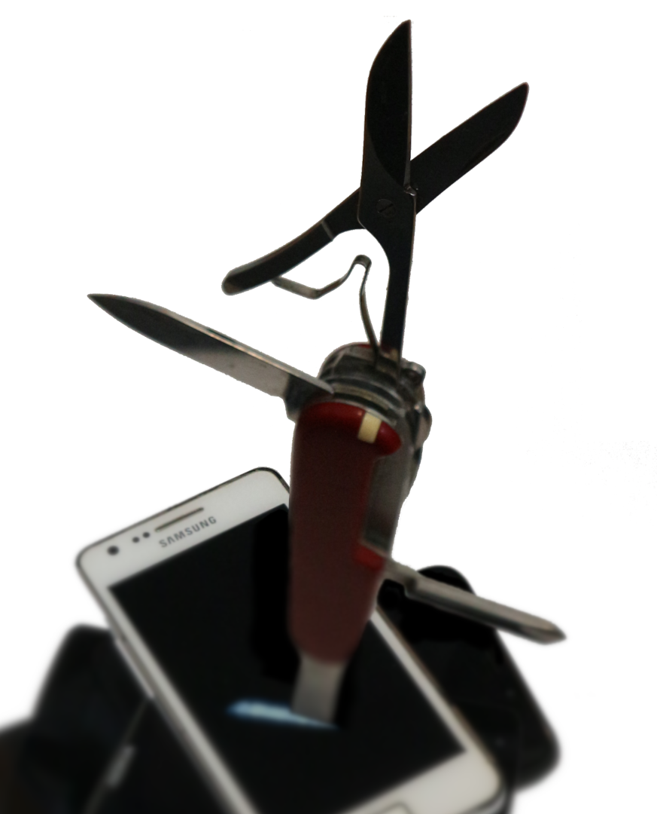

 <br><br><br><br> # pmbootstrap: # the Swiss Army knife of # postmarketOS development Oliver Smith, AlpineConf 2021 --- # What is postmarketOS? -- * Alpine Linux based OS for smartphones and other mobile devices -- * Published in 2017 (development started in 2016) -- * In contrary to mainstream phone OS, the user owns the phone and not the other way around -- * Modular architecture with as much shared between the devices as possible -- * Has been ported to > 250 devices with various levels of greatness (from barely booting with downstream kernel to (close to) mainline with SMS, calls, camera working) -- <div class="space"></div> * For Linux enthusiasts, some of them use it as daily driver --- # What is pmbootstrap? -- * Lightweight Python CLI program -- * Uses Alpine Linux chroots to provide a distro-agnostic environment -- * (Cross) compiles postmarketOS packages with Alpine's abuild from source -- * Creates postmarketOS installation images -- * Abstracts flashing methods (fastboot, heimdall, ...) -- * We use it to build official binary packages and installation images -- <div class="space"></div> ### So how would I use it to... let's say, install postmarketOS to the Samsung Galaxy S2 on the left? --- # More demos! When the presenter starts with demos at the end of the third slide already, there will be plenty of them. -- ### How to build packages? -- ### How to transfer packages to the device? [(wiki)](https://wiki.postmarketos.org/wiki/Installing_packages_on_a_running_phone) -- ### How to port a new device? [(wiki)](https://wiki.postmarketos.org/wiki/Porting_to_a_new_device) -- <div class="space"></div> ### How to run postmarketOS in QEMU? --- # pmaports.git tour -- * Name: <u>p</u>ost<u>m</u>arketOS <u>a</u>lpine <u>ports</u> -- * One binary repository index from all packages -- * Directory structure: -- <small> <pre> ├── cross │ ├── gcc-aarch64 │ ... ├── device │ ├── community │ ├── main │ ├── testing │ └── unmaintained ├── main │ ├── postmarketos-ui-phosh │ ├── postmarketos-ui-plasma-mobile │ ├── postmarketos-ui-sxmo │ ... ├── modem ├── temp ... ├── channels.cfg └── pmaports.cfg </pre> </small> --- # pmaports.git tour #2 -- ### What is channels.cfg? [(wiki)](https://wiki.postmarketos.org/wiki/Channels.cfg_reference) -- ### What is pmaports.cfg? [(wiki)](https://wiki.postmarketos.org/wiki/Pmaports.cfg_reference) -- ### Where is the local pmaports.git clone? [(wiki)](https://wiki.postmarketos.org/wiki/Pmaports.git) -- ### Should my package be in postmarketOS or Alpine? [(wiki)](https://wiki.postmarketos.org/wiki/Packaging#Should_my_package_be_in_postmarketOS_or_Alpine?) --- # Advanced features -- ### envkernel.sh [(wiki)](https://wiki.postmarketos.org/wiki/Compiling_kernels_with_envkernel.sh) -- ### pmbootstrap build --src [(wiki)](https://wiki.postmarketos.org/wiki/On-device_installer#Building_components_from_source) --- name: credits <!-- last slide! --> <iframe id="credits_iframe" src="about:blank" frameborder="0" style="margin: -100px 0px 0px -100px; height: 800px; width: 450px; border-right: 2px dotted gray; float: left; margin-right: 50px"></iframe> # thanks, everybody! `$ git shortlog --summary | cut -c 8- | sort` <p style="font-size: 8pt; line-height: 1.3"> Adam Van Ymeren, Adrian Siekierka, Aerotinge, Alex Dills, Alex Roth, Alexander, Alexander Stillich, Alexandroid99, Alexey Min, Alfie Day, Anjandev Momi, Anri Dellal, Antoine Fontaine, Anton Lazarev, Ashymad, Attila Szöllősi, BK, Bart Ribbers, Ben Iofel, Bhushan Shah, Bobby The Builder, Bradley Gamble, Brian Otto, C0rn3j, Caio Fontes, Callum A. D. Thomson, Chinmaya Krishnan Mahesh, Claudio Maggioni, Clayton Craft, Craig Comstock, Craig Tatlor, Danct12, Daniele Debernardi, Daniil Yarancev, Davide Gessa, Decatf, Dimitris Zervas, Dolphin von Chips, Drew DeVault, Duncan Guthrie, Dylan Van Assche, Emil Lauridsen, Eric Hosmer, Ethan R. Jones, Eyal Sawady, Fabrice Desré, Filip Matijević, George Hopkins, Grant Miller, HenriDellal, Henrik Grimler, Idan Horo, Ion Agorria, Iskren Chernev, JBB, JBBgameich, Jacob Juric, James Heald, Jami Kettunen, Jean Lucas, Jochen Sprickerhof, Joey Hewitt, Johannes Marbach, Jonah Brüchert, Jonty Sewell, JuniorJPDJ, Kenneth Endfinger, Kevin Liu, Kieran Elmes, Klaus, Konrad Dybcio, Krait Bosheit Takoj, KuroLevin, Larvitar, Linus Walleij, Linux User, Lionel Duboeuf, Luca Weiss, Lucas Ramage, Magnus Gulin, Marcin Mielniczuk, Mark Hargreaves, Marti Raudsepp, Martijn Braam, Martin, Martin Rys, Mathieu Maret, Mayeul Cantan, Michael Hamann, Michael Kupfer, Michael Orishich, MightyM17, Minecrell, MoreRobustThanYou, Nick Boone, Nick Reitemeyer, Nikk Saan, Niklas Cathor, Nikolay, NotKit, Nutcake, Olgierd Nowakowski, Oliver Smith, Pablo Castellano, Pavel Machek, Pellegrino Prevete, Peter Mann, Pierre Rudloff, Piotr Halama, PureTryOut, Ralf Rachinger, Rares, Ricardo Rodrigues, Robert Yang, Ryan Murthick, SaiKarthik Karra, Samuel Dionne-Riel, Santosh D, Shubham Naik, Sicelo, Simon Schmeisser, Steffen Pankratz, Tomas Safarik, Vadim Rutkovsky, William O-D, Wouter Franken, Wouter92, Xinayder, Yan, Yuval Adam, Zhuowei Zhang, ajakk, alive4ever, ashirviskas, bhuvi, carlos killpack, cclauss, clayton craft, cmdr2, cybermonkey, deata, drebrez, fjmax, george99g, indefini, j0ki, joris, joshas, kamnxt, kskarthik, lambdadroid, lawl, mgulin, montvid, myfreeweb, nybbled, opendata26, pikpok, praticamentetilde, racer123, raingloom, rrooij, ryang, shwsh, steamport, timbz, yangxuan8282, yarl, zhenyolka, zhuowei </p> <table style="width: 420px; font-size: 14pt;" cellspacing=20> <tr> <td><i class="fas fa-link fa-2x fa-fw"></i> postmarketos.org</td> </tr><tr> <td><i class="fab fa-mastodon fa-2x fa-fw"></i> fosstodon.org/@postmarketOS</td> </tr> </table>